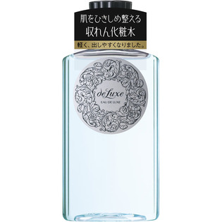

返回列表
产品名称：ドルックス オードルックス （アストリンゼントマイルド） N

資生堂 ドルックス オードルックス （アストリンゼントマイルド） N １５０ｍｌ
メーカー 資生堂
JANコード 4901872241262
商品の特徴
肌をひきしめ、キメを整える収れん化粧水
さわやかな感触で水分を補い、肌をひきしめキメを整える。
成分・分量
-
用法及び用量
＜使用方法＞
●乳液のあと、手のひらまたはコットンにティースプーン2/3杯をとり、軽くたたくようにして肌になじませます。